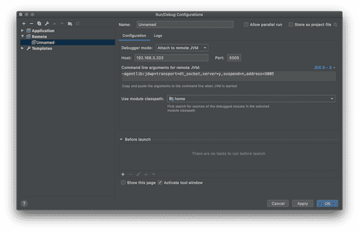

-
Linux 下安装 JDK、Windows 下安装 JDK、Mac 下安装 JDK
2020-12-26 19:46:00
-
Nginx("engine x")是一款是由俄罗斯的程序设计师 Igor Sysoev 所开发高性能的 Web 和 反向代理 服务器，它的特点：安装简单、配置文件简洁、Bug 少、启动容易、几乎7*24不间断运行、数月不需重启。
2020-12-26 18:26:18
-
FFmpeg 是一套可以用来记录、转换数字音频、视频，并能将其转化为流的开源计算机程序。采用LGPL或GPL许可证。它提供了录制、转换以及流化音视频的完整解决方案。
2020-11-17 14:23:37
-
JDK 自带的 JVisualVM 监控工具能有效的帮助我们监控 Java 应用程序运行过程中占用消耗的CPU、内存、类和线程等资源信息。
2020-11-12 08:25:32
-

vi 文本编辑
2020-11-12 05:59:55
-
平时开发中最常用的一些方法
2020-11-12 05:55:17
-
敏捷开发：就是把一个大项目分为多个相互联系，但也可独立运行的小项目，并分别完成，在此过程中软件一直处于可使用状态。
2020-11-12 05:49:04
-
Tengine是由淘宝网发起的Web服务器项目。它在Nginx的基础上，针对大访问量网站的需求，添加了很多高级功能和特性。Tengine的性能和稳定性已经在大型的网站如淘宝网，天猫商城等得到了很好的检验。它的最终目标是打造一个高效稳定安全易用的Web平台。
2020-11-10 20:07:38
-
微信公众平台，简称公众号。曾命名为“官号平台”、“媒体平台”、微信公众号，最终定位为“公众平台”。
2020-11-10 20:07:32
-
Tomcat 是Java 最著名的开源Web容器，开源、简单、易用、稳定性极好。而 Undertow 是一款基于 NIO 的高性能 Web 嵌入式服务器，轻量级、高性能、提供阻塞或基于 XNIO 的非阻塞机制。
2020-11-10 19:59:53
-
小型应用服务器
2020-11-10 19:22:32